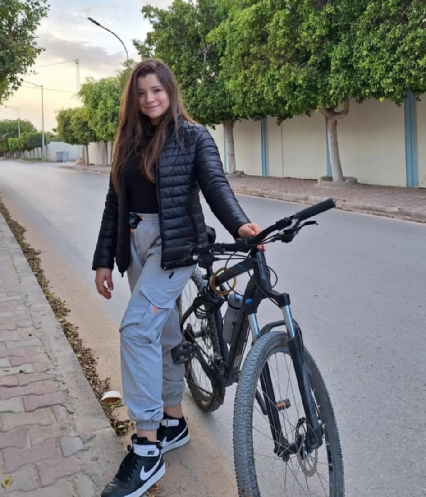
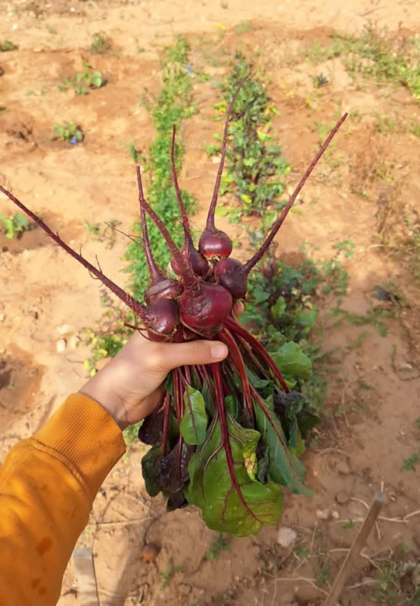
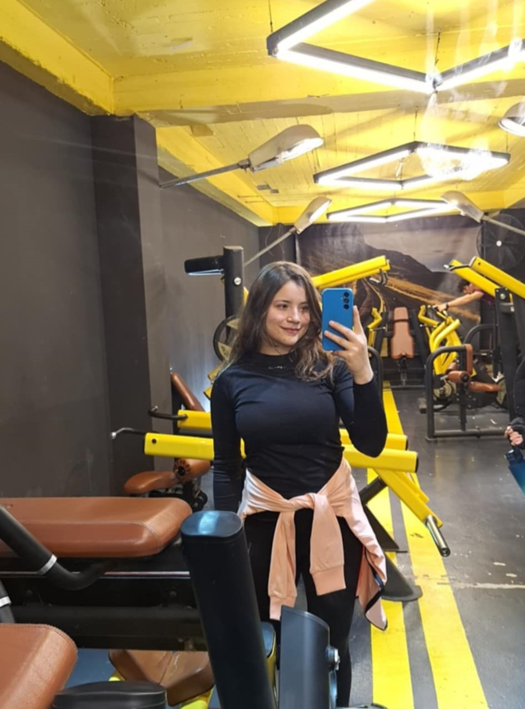

Le cyclisme est une passion qui me permet de me dépasser physiquement et de découvrir de magnifiques paysages.

J'adore passer du temps dans mon jardin, planter pour récolter des aliments bio.

Le sport est essentiel pour mon équilibre mental et physique. Il m'aide à rester concentrée et motivée.